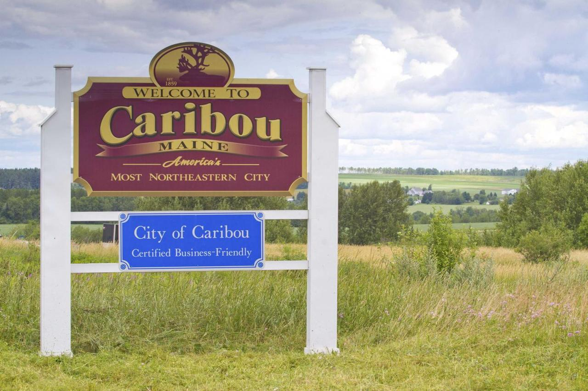

I am from Caribou, Maine, which is nicknamed the most Northeastern City in the United States. The population is approximately 8,000 people. Caribou is home to several well-known people. Jessica Meir, who is currently an astronaut in space, was born in Caribou and graduated from Caribou High School. John May, who is the new CEO of John Deere, graduated from Caribou High School. Also, Olaf Pierson, the inventer of frozen french fries, was from Caribou. Many people believe that Caribou is all potato fields, and although there are quite a few, there is a lot more in Caribou than just potato fields.